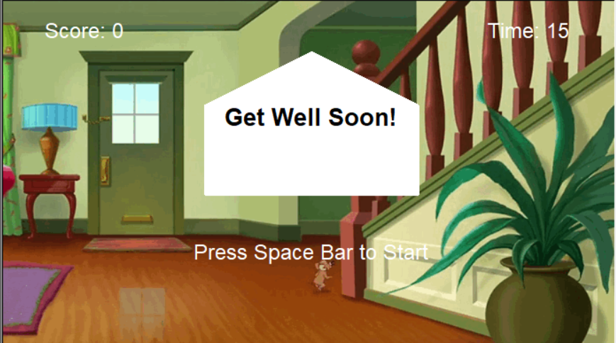
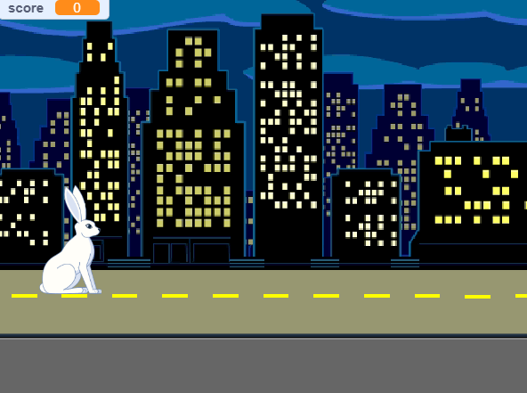
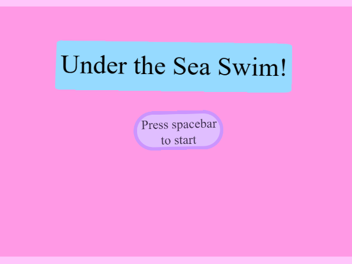
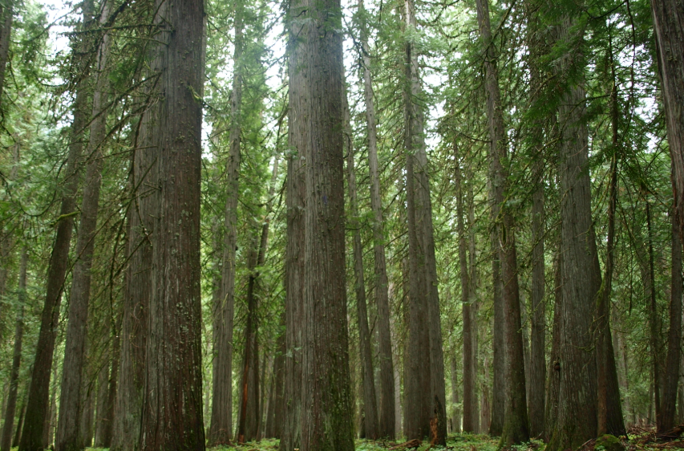

Home
Portfolio
About Me
This is my Portfolio Page!

Build Your Own Garden Project
.png)
Matilda and I created a game where you can customize your own garden through answering a series of questions. It starts with a background of a garden bed and bee, then the user is prompted with color and flower type questions which are then drawn after answered.
Racing Game

Nathan and I created a racing game where the user can place a bet on the winner of the race and will either be rewarded or lose money depending on the outcome of the race.
Tom & Jerry Get Well Card Game

Yatish and I created a get well card for the children's hospital where they can play a chasing game after viewing the message.
Bunny Adventure (Scratch Project)

Yusen, Bernardo, and I created a bunny adventure game where the user must avoid obstacles to get to a spring setting. We used various element such as background changing, sound, user input, animation, procedures, score, and counters.
creative performance task

I created an obstacle run which you have to avoid the sharks and survive with 3 lives for the ap test portfolio.
Rover Project

We analyzed graphs and data to match and come to the conclusion that the rover is in the inland forest.
Disease Simulation

We analyzed a simulation which showed the quick spread of disease within people who are healthy amoung an infected individual. With this, we had to create conclusions and work together on a presentation.